Le repas du monde au Crous
Un déjeuner pour voyager sans quitter le resto U : 3 entrées, 3 plats et 3 desserts de cuisines différentes. Tu composes ton plateau, pour 1 €.
Quand, où, combien
Le repas aura lieu au restaurant universitaire. Tu viens quand tu veux pendant le service.
- Date
- Lundi 8 février 2027
- Horaires
- De 11 h 30 à 14 h
- Lieu
- Restaurant universitaire Crous de l’IUT Nice Côte d’Azur
- Adresse
- 41 boulevard Napoléon III, 06200 Nice
- Accès
- Arrêt Constellations / IUT
- Prix
- 1 € le repas complet
- Public
- Étudiants et personnels de l’IUT
- Réservation
- Inutile : viens directement
Comment venir ?
Le restaurant universitaire se trouve sur le site de l’IUT Nice Côte d’Azur, au 41 boulevard Napoléon III, à Nice. L’arrêt le plus proche s’appelle Constellations / IUT.
Une entrée, un plat, un dessert
9 propositions : 3 entrées, 3 plats et 3 desserts au choix, chacun d’une cuisine différente. Chaque étudiant compose son plateau avec une entrée, un plat et un dessert.
Aux fourneaux : l’équipe du restaurant universitaire, avec un ou plusieurs chefs de restaurants du monde de Nice.
Ci-contre, nos premières idées de plats, rien d’officiel : le menu définitif sera choisi par un sondage auprès des étudiants (novembre 2026), puis validé avec le Crous et les chefs. Voir le détail des plats.
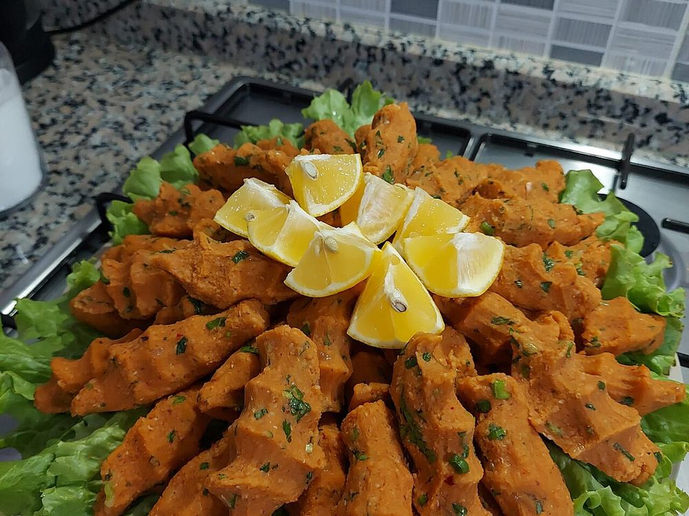
Mercimek köftesiTurquie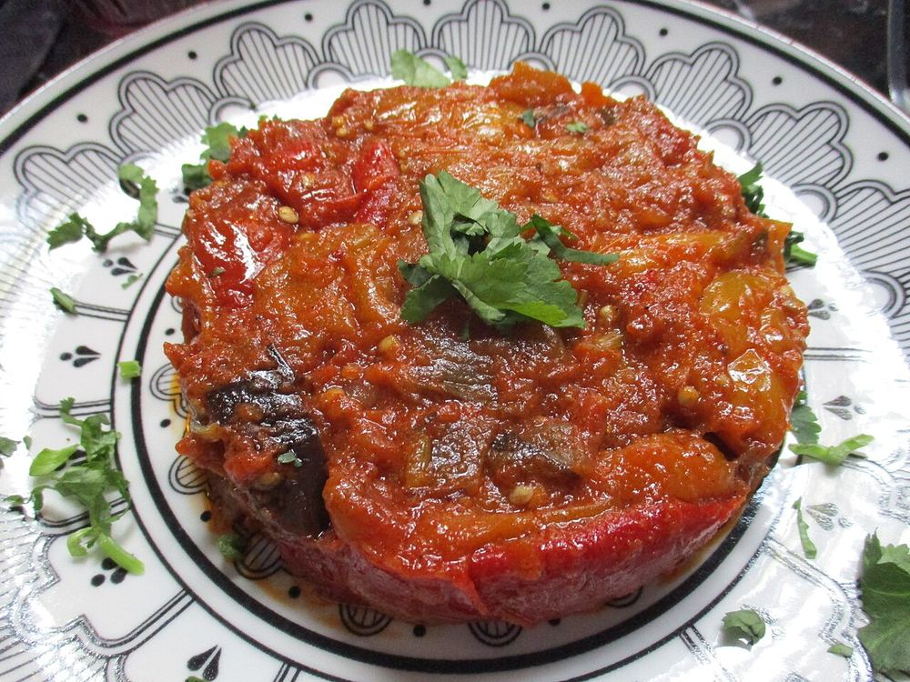
 ZaaloukMaroc
ZaaloukMaroc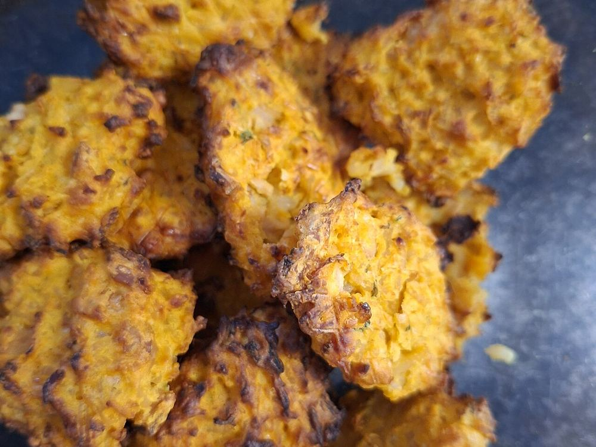
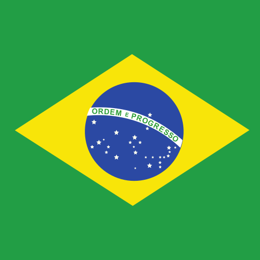
Bolinho de arrozBrésil
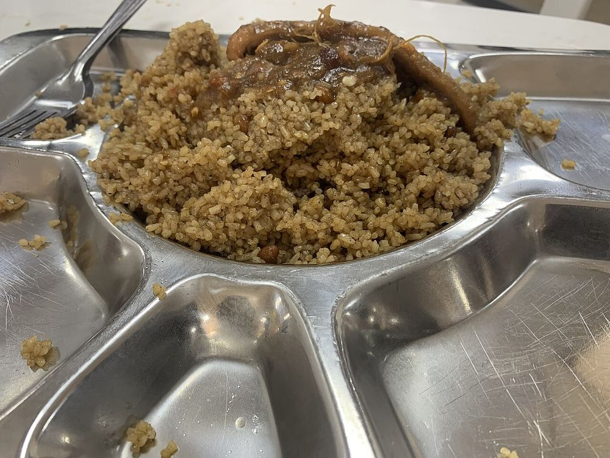
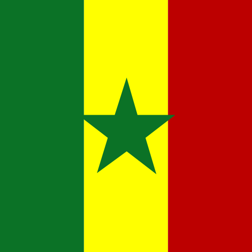
Thiébou niébéSénégal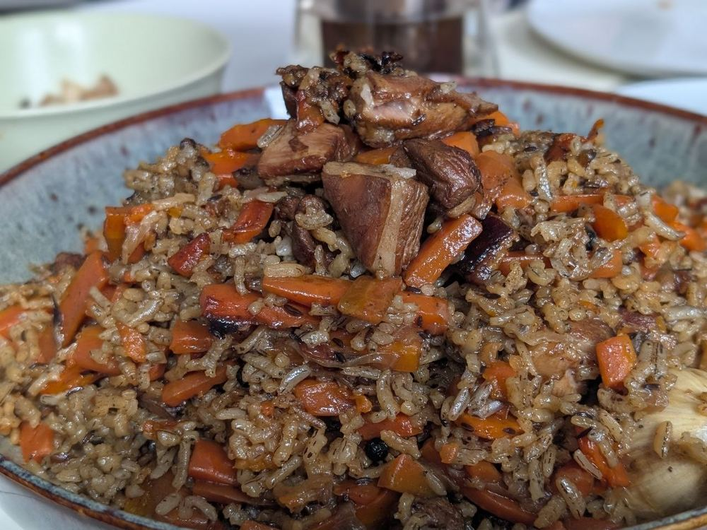
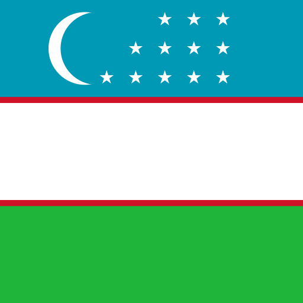
PlovOuzbékistan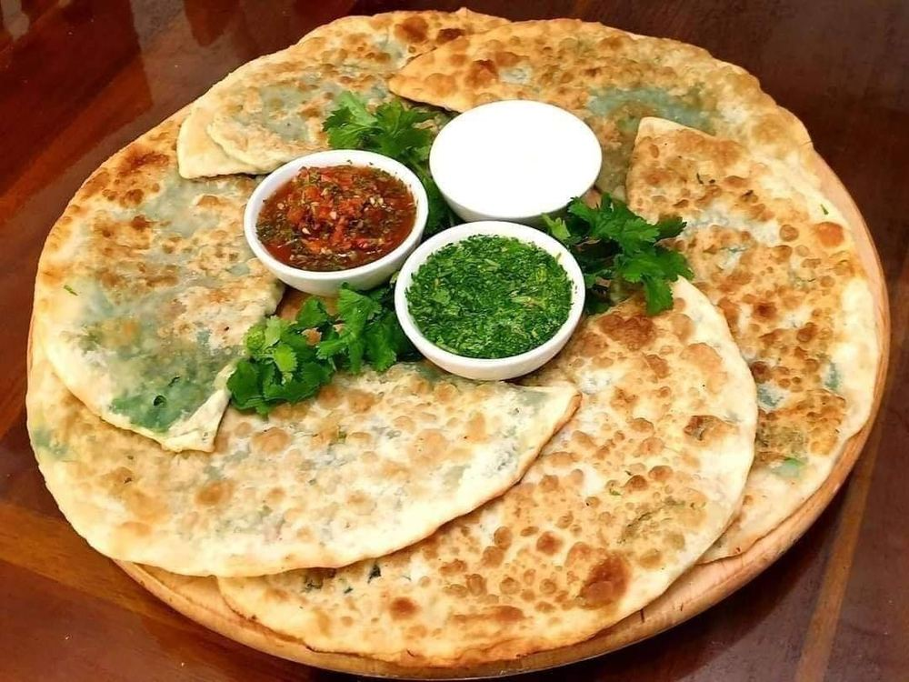
BolaniAfghanistan
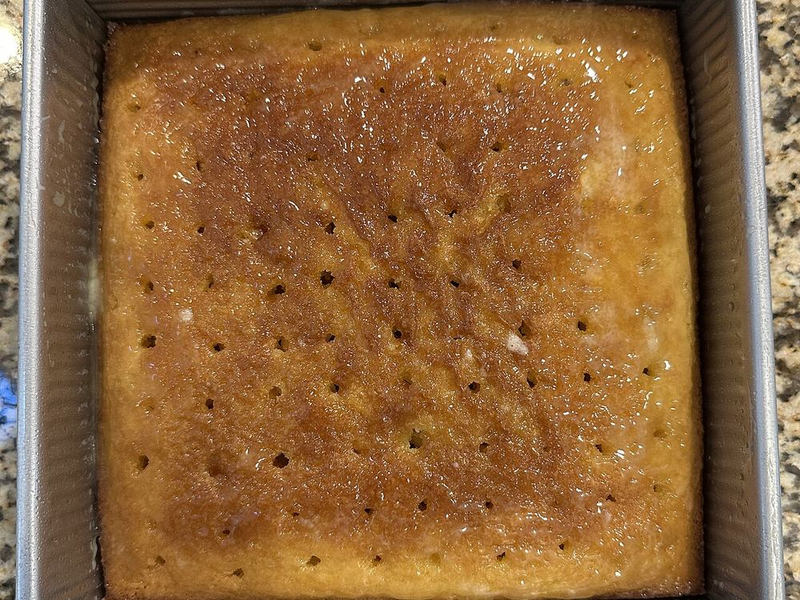
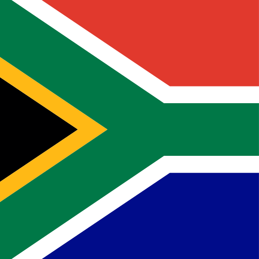
Malva puddingAfrique du Sud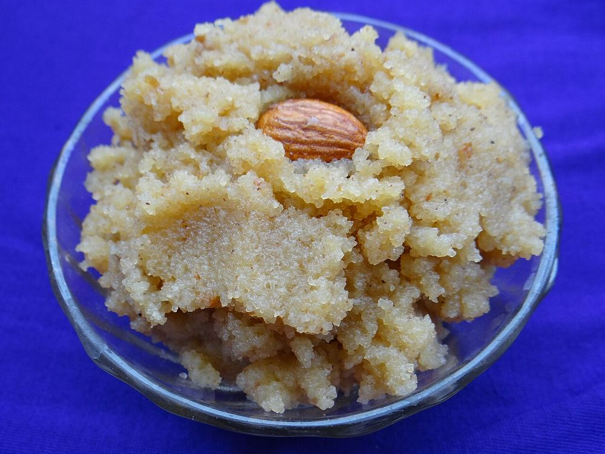
 Suji halwaInde
Suji halwaInde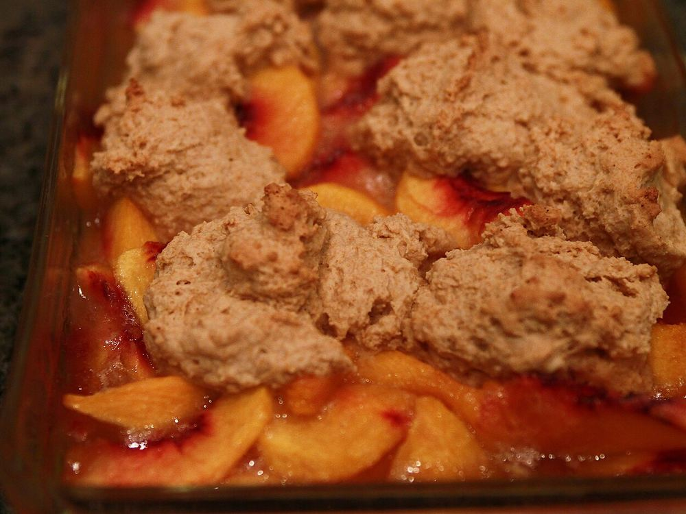
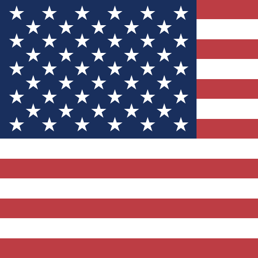
Peach cobblerÉtats-Unis
Le repas de la communauté IUT
Étudiants et personnels de l’IUT
Viens directement entre 11 h 30 et 14 h. Pas de réservation, pas d’inscription.
Partenaires, donateurs, professionnels liés au Crous ou à l’IUT
Vous pouvez réserver, sur demande, en nous écrivant : contactpro.pangea@gmail.com
Personnes extérieures
Le repas est réservé aux étudiants et aux personnels de l’IUT : les personnes extérieures ne peuvent pas venir.
Nos engagements
Allergènes affichés
Pour chaque plat, les 14 allergènes réglementaires sont indiqués.
Origine des viandes
L’origine des viandes est indiquée sur place.
Option végétarienne
Au moins un des plats principaux est végétarien.
Photos avec accord
Les photos sont prises uniquement avec le consentement des personnes.
Le repas sera encadré par une convention avec le Crous, en cours de préparation (signature prévue début décembre 2026).
Tu te demandes peut-être…
Combien coûte le repas ?
1 € le repas complet : une entrée, un plat et un dessert.
Faut-il réserver ?
Non. Les étudiants et les personnels de l’IUT viennent directement, entre 11 h 30 et 14 h. Seuls les partenaires, donateurs et professionnels liés au Crous ou à l’IUT peuvent réserver, sur demande.
Je ne suis ni étudiant ni personnel de l’IUT, puis-je venir ?
Non, désolé : le repas est réservé aux étudiants et aux personnels de l’IUT.
Y aura-t-il un plat végétarien ?
Oui, au moins un des plats principaux sera végétarien. Les mentions végan, végétarien et sans gluten seront publiées pour chaque plat avec le menu.
J’ai une allergie, comment savoir ce que je peux manger ?
Les allergènes sont affichés sur place pour chaque plat. Les fiches allergènes seront aussi publiées sur la page Le menu à partir de mi-janvier 2027.
Qui cuisine ?
L’équipe du restaurant universitaire, avec un ou plusieurs chefs de restaurants du monde de Nice. La cuisine leur est réservée : les bénévoles aident à la décoration, à l’accueil et au rangement.
Comment le menu est-il choisi ?
Par un sondage auprès des étudiants en novembre 2026, puis validé avec le Crous et les chefs.
Vais-je être pris en photo ?
Les photos sont prises uniquement avec le consentement des personnes.